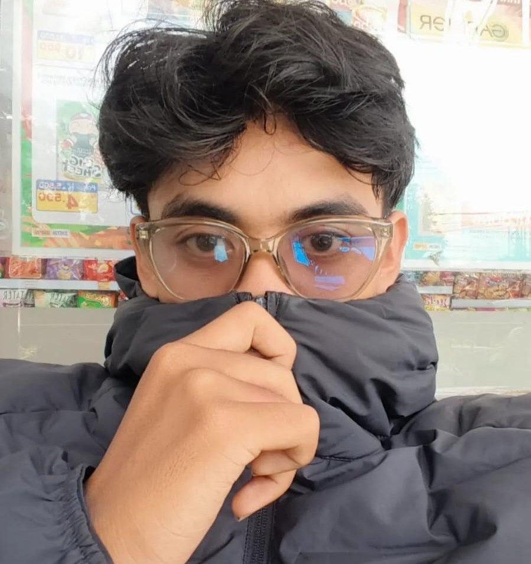

Hello, Saya Gede Yoga Saputra
Saya adalah seorang mahasiswa D4 Teknologi Rekayasa Perangkat Lunak yang sedang mengejar pendidikan dan pengalaman di bidang teknologi informasi. Saya tertarik dengan dunia pemrograman dan pengembangan website.

Mahasiswa D4 TRPL
Web Development Enthusiast